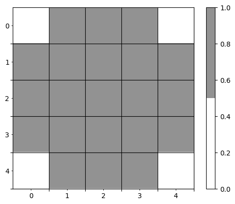
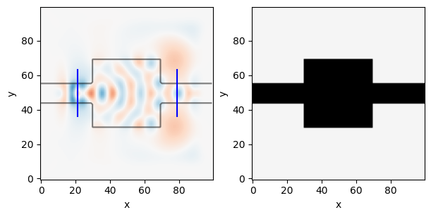
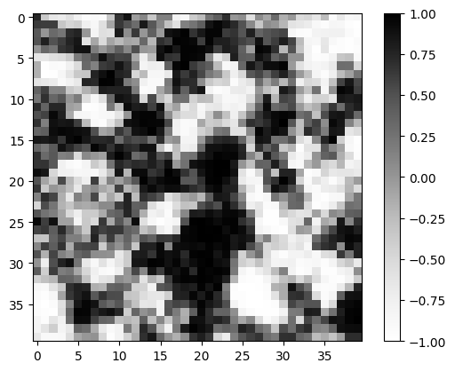
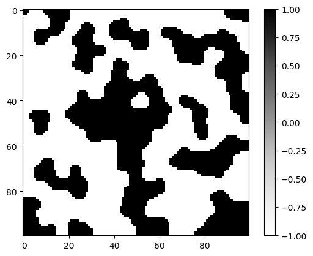
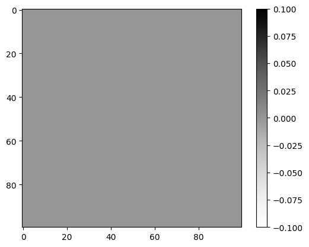
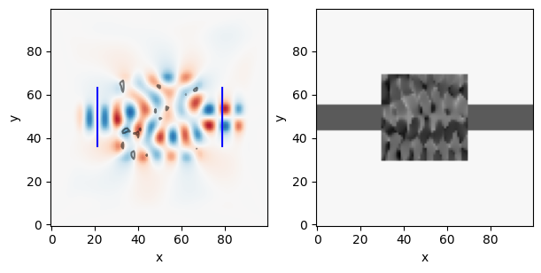
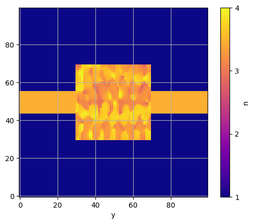

# Angular frequency of the source in Hz
omega = 2 * np.pi * 200e12
# Spatial resolution in meters
dl = 40e-9
# Number of pixels in x-direction
Nx = 100
# Number of pixels in y-direction
Ny = 100
# Number of pixels in the PMLs in each direction
Npml = 20
# Initial value of the structure's relative permittivity
epsr_init = 12.0
# Space between the PMLs and the design region (in pixels)
space = 10
# Width of the waveguide (in pixels)
wg_width = 12
# Length in pixels of the source/probe slices on each side of the center point
space_slice = 8
# Number of epochs in the optimization
Nsteps = 100
# Step size for the Adam optimizer
step_size = 1e-2Inverse Design
A smarter way to do inverse design, using the conditional generator.
This notebook was adapted from Ceviche’s inverse design introduction to use a JAX-based optimization loop in stead of the default Ceviche optimization loop.
Parameters
Our toy optimization problem will be to design a device that converts an input in the first-order mode into an output as the second-order mode. First, we define the parameters of our device and optimization:
Brush
brush = notched_square_brush(5, 1)
show_mask(brush)No GPU/TPU found, falling back to CPU. (Set TF_CPP_MIN_LOG_LEVEL=0 and rerun for more info.)
Initial Device
# Initialize the parametrization rho and the design region
epsr, bg_epsr, design_region, input_slice, output_slice = init_domain(
Nx, Ny, Npml, space=space, wg_width=wg_width, space_slice=space_slice
)
epsr_total = mask_combine_epsr(epsr, bg_epsr, design_region)
# Setup source
source = insert_mode(omega, dl, input_slice.x, input_slice.y, epsr_total, m=1)
# Setup probe
probe = insert_mode(omega, dl, output_slice.x, output_slice.y, epsr_total, m=2)# Simulate initial device
simulation, ax = viz_sim(epsr_total, source, slices=[input_slice, output_slice])
# get normalization factor (field overlap before optimizing)
_, _, Ez = simulation.solve(source)
E0 = mode_overlap(Ez, probe)
get_design_region
get_design_region (epsr, design_region=array([[0., 0., 0., ..., 0., 0., 0.], [0., 0., 0., ..., 0., 0., 0.], [0., 0., 0., ..., 0., 0., 0.], ..., [0., 0., 0., ..., 0., 0., 0.], [0., 0., 0., ..., 0., 0., 0.], [0., 0., 0., ..., 0., 0., 0.]]))
set_design_region
set_design_region (epsr, value, design_region=array([[0., 0., 0., ..., 0., 0., 0.], [0., 0., 0., ..., 0., 0., 0.], [0., 0., 0., ..., 0., 0., 0.], ..., [0., 0., 0., ..., 0., 0., 0.], [0., 0., 0., ..., 0., 0., 0.], [0., 0., 0., ..., 0., 0., 0.]]))
Latent Weights
#latent = get_design_region(new_latent_design((Nx, Ny), r=0))
latent = new_latent_design((Nx, Ny), r=0)
latent_t = transform(latent, brush)
plt.imshow(get_design_region(latent_t), cmap="Greys", vmin=-1, vmax=1)
plt.colorbar()
plt.show()
Forward Pass
design = generate_feasible_design(latent_t, brush, verbose=False)mask = generate_feasible_design_mask(latent_t, brush)full_mask = np.zeros_like(epsr, dtype=bool)
#full_mask = set_design_region(full_mask, mask)
plt.imshow(mask, cmap="Greys")
plt.colorbar()
plt.show()
plt.imshow(full_mask, cmap="Greys")
plt.colorbar()
plt.show()CPU times: user 142 ms, sys: 0 ns, total: 142 ms
Wall time: 235 ms

def forward(latent_weights, brush):
latent_t = transform(latent_weights, brush)
design_mask = generate_feasible_design_mask(latent_t, brush)
epsr = np.where(design_mask, 12.0, 1.0)forward
forward (latent_weights, brush)
def loss_fn(epsr):
epsr = epsr.reshape((Nx, Ny))
simulation.eps_r = mask_combine_epsr(epsr, bg_epsr, design_region)
_, _, Ez = simulation.solve(source)
return -mode_overlap(Ez, probe) / E0loss_fn
loss_fn (epsr)
grad_fn = jacobian(loss_fn, mode='reverse')Optimization
# Simulate initial device
simulation, ax = viz_sim(epsr_total, source, slices=[input_slice, output_slice])init_fn, update_fn, params_fn = adam(step_size)
state = init_fn(epsr.reshape(1, -1))this is the optimization step:
step_fn
step_fn (step, state)
we can now loop over the optimization:
range_ = trange(500)
for step in range_:
loss, state = step_fn(step, state)
range_.set_postfix(loss=float(loss))epsr_optimum = params_fn(state)
epsr_optimum = epsr_optimum.reshape((Nx, Ny))# Simulate and show the optimal device
epsr_optimum_total = mask_combine_epsr(epsr_optimum, bg_epsr, design_region)
simulation, ax = viz_sim(epsr_optimum_total, source, slices=[input_slice, output_slice])
At the end of the optimization we can see our final device. From the field pattern, we can easily observe that the device is doing what we intend: the even mode enters from the left and exits as the odd mode on the right.
However, an additional observation is that our device’s permittivity changes continuously. This is not ideal if we wanted to fabricated our device. We’re also not constraining the minimum and maximum values of \(\epsilon_r\). Thus, we need to consider alternative ways of parameterizing our device.
plt.imshow(np.sqrt(epsr_optimum_total.T), cmap="plasma", vmin=1, vmax=4)
plt.ylim(*plt.ylim()[::-1])
plt.colorbar(ticks=[1,2,3,4], label="n")
plt.xlabel("x")
plt.xlabel("y")
plt.grid(True)